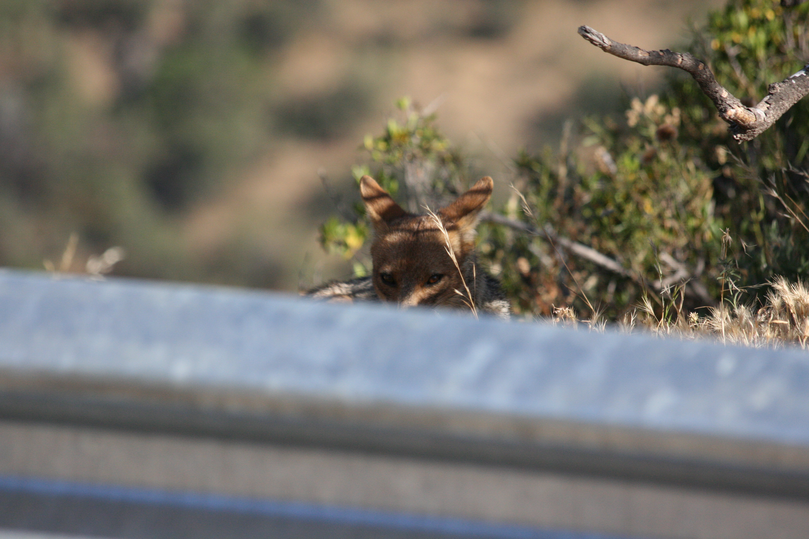
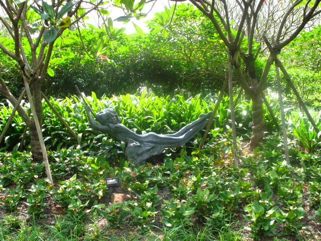
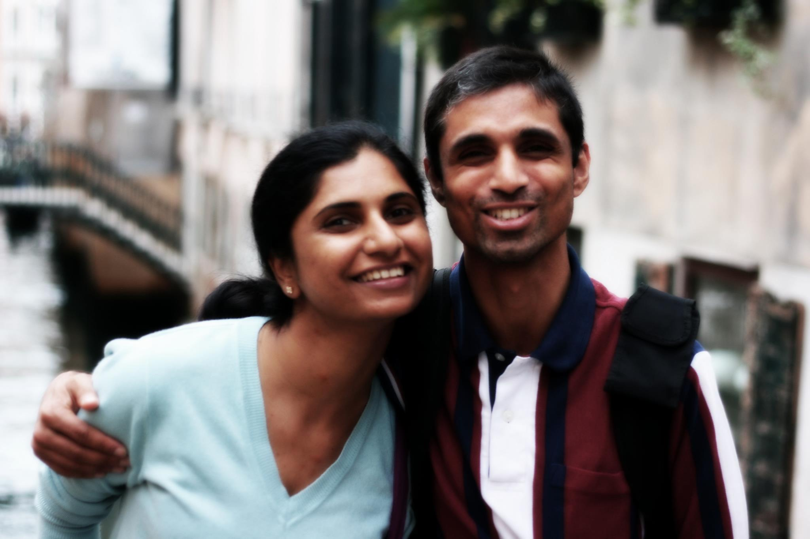
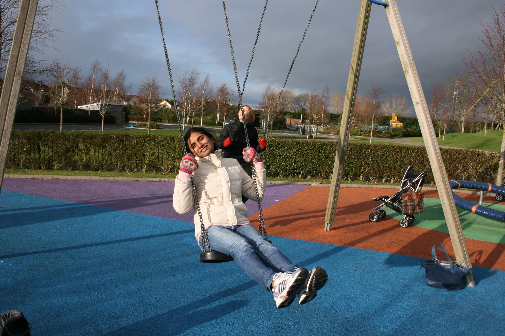

[Jun'22: New Orleans, USA] It’s that moment when you try to look smiling and friendly while silently screaming, 'Please don’t eat me!' Stress level: Jurassic Park. When our alligator baby chooses me and definitely knows how to say hello. It’s just that its idea of a friendly greeting is to invite me to stick out my hand and get a ‘snappy’ petting session!

[Indonesia, Oct'10] Silhouette of Buddha at Borobodur. The image was captured at Sunrise, around 5AM. The Borobodur sunrise tour is something people visiting Indonesia cannot miss. The tranquility it had offered is etched deep in my mind.

[Aug'11: Khao Sok National Park, Thailand] Vacationing in Khao Sok was a blast! Our treehouse buddy was this guy—a snake who clearly ran the local branch of a Computer Vision Corp. Just that it was truly my energy minimizing, and a deformable spline like in vision. On the same treehouse as ours it appeared to hold board meetings and the birds gossip about possibly the futility of human existence!

[Jul'15: Syracruse, Italy], Ah, Cruise in Syracuse: A greek city like town with significant historical roots and Syracuse, the birthplace of Archimedes, where you can almost hear him yelling, "Eureka!". Back in the day, I was as skinny as a Greek godess— well, at least in my dreams. Now, fighting an eternal battle with my waistband. Appears battles are perrenial, for eg., battling for GPUs/space in this wild AI world.

[Apr'12: Kaziranga National Park, India] In the lush landscape of Kaziranga, a solitary deer stood near the placid lake, feeling a bit like the last guest at a party that ended hours ago. As the sun dipped below the horizon, casting a the deers own shadow over the water, the deer sighed dramatically, thinking, “So, this is what they meant by ‘me-time.’”

[Oct'15: Andes mountain range, Chile, South America] Andes's most elusive runway model is this fox. The Andean fox sports a dense, chic reddish-brown coat and thrives in various environments—unlike us, who demand AC and heating even when the weather is perfectly fine. Who's the real adaptable creature here? Foxes in Chile are like expert ninjas—they’re elusive, often vanishing into thin air. But wave around some food, and suddenly they become as common as WiFi in a coffee shop!

[Oct'09: Botanical gardens, Singapore] As you lounge in your royal hammock, with grace and in a state of ultimate relaxation. Here's to a day full of gentle breeze, zero mosquito bites in SG humid weather, and endless hammock-time dreams.

[Dec'16: Pepsi's kids, Delhi] So what if the mom died....how can we let these cute puppies die without food. Thanks to god for giving me wisdom to keep them warm and giving them life. Caltech hoodie put to some use.

[Mar'18:Canada Goose, Santa Rosa, USA] Geese aren't plain interested to pose - bad subjects!! they are

[Oct'12, Venice] Us, struck by Fernweh

[Oct'16, Dubai] Deep in thought as the jet and the sunset are engaged in a mesmerizing dance, making me a luckiest passenger on earth.

[Apr'12: Carlow, Ireland] Amidst the chilly breeze and radiant sunlight, we try to warm up our frozen fingers in the winter sun’s rays.
Caption 15
Caption 16
Caption 17
Caption 18
Caption 19
Caption 20
Caption 20

[Mar'17: San Francisco] On the way to Vedanta Society of Northern California, SFO, USA